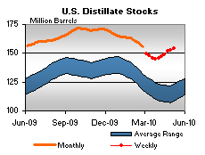

Released on May 12, 2010
(Next Release on May 19, 2010)
Summer Gasoline and the 3-2-1 Crack Spread
As Memorial Day weekend approaches, many consumers are starting to pay more attention to gasoline prices, which have risen by about 11 cents per gallon since the end of March. Domestic refineries, which produce most of our gasoline, have already been gearing up for the upcoming summer driving season by switching over to the production of summer-grade products and preparing for higher utilization rates. Prices are influenced by three main factors: the change in price of the major feedstock, crude oil, the higher cost to produce summer-grade gasoline, and changes in refiner margins.
One commonly used indicator of margin and profitability trends of refiners is the 3-2-1 Gulf Coast crack spread formula. This formula estimates the gross margin (revenues minus feedstock costs) a refinery might get from turning three barrels of WTI crude oil into two barrels of gasoline and one barrel of heating oil. The 2-to-1 gasoline-to-diesel ratio is a very rough measure of the relative sizes of the two highest-volume and highest-valued products that U.S. refiners produce from a barrel of crude oil. The crack spread does not take into account all product revenues, and excludes operating and feedstock costs other than the price of crude oil. But, nonetheless, a crack spread can be a useful metric, particularly for directional changes in refiner margins.
Refinery gross margins are not constant throughout the year, and the 3-2-1 crack spread illustrates some of the seasonality. The crack spread is usually highest during the second and third quarters of the year (see chart below). Part of the typical increase in gasoline prices in the second quarter is due to higher gasoline consumption and tighter markets during the summertime as more drivers are on the road. Higher summer gasoline demand requires refiners to increase gasoline output, which can increase the cost of production.
Hurricanes and other supply disruptions can exacerbate tight markets and lead to even higher product price and crack spread increases as was seen in third quarters of 2005 and 2008.
Another important, but less well known, reason for rising crack spreads and gasoline prices is that May 1 marks the date for most of the country when more costly summer-grade gasoline is required (April 1 in southern California). The maximum allowable vapor pressure, which is measured as Reid vapor pressure (Rvp), is the primary distinction between winter- and summer-grade gasolines. When the weather turns warm, a high vapor pressure increases the evaporation of the gasoline into the atmosphere. The volatile organic compounds that are released from gasoline into the air not only contribute directly to health problems, but also indirectly through the formation of ground-level ozone and smog. Gasoline vapor pressure is also important for an automobile engine to operate efficiently. Vapor pressure must be high enough to allow an engine to start easily, but it must not be so high as to lead to vapor lock, which stalls the engine when gasoline in the engine’s fuel delivery system prematurely turns from liquid to vapor.
Reducing gasoline vapor pressure to lessen harmful emissions and maintain car driveability during the summer adds to refiners’ operating costs in the second and third quarters. Because of these higher costs, the rise in the crack spread during the summer months overstates the actual increase in the profitability of gasoline sales.
Over the past five years (2005-2009), regular gasoline retail prices have increased an average of 18 cents per gallon from April to May, when most of the country is required to switch to summer gasoline. However, in EIA’s May Short-Term Energy Outlook the increase is expected to be just 7 cents per gallon this year. Projected refinery utilization rates that are below seasonal norms, high inventories, and relatively low year-over-year consumption growth are key factors that are expected to keep this summer’s 3-2-1 crack spreads below the previous 5-year average.
Retail Gasoline Price Edges Upward
The retail gasoline market saw a small gain on May 10, with the national average retail price for regular motor gasoline moving up nearly penny to $2.91 per gallon. This price is $0.67 above last year. Prices rose in four of the five principal regions of the country, with the exception being the Midwest where the price slipped a penny to $2.87 per gallon. The East Coast average climbed nearly two cents to $2.90 per gallon. On the Gulf Coast, the average price moved up a penny to $2.79 per gallon. The Rocky Mountain price went up more than a penny to $2.91 per gallon. The averages on the West Coast and in California rose two cents to $3.10 per gallon and $3.14 per gallon, respectively.
The national average price for diesel fuel increased a half cent to $3.13 per gallon, $0.91 cents higher than a year ago. The average price on the East Coast rose a penny to $3.14 per gallon. At $3.10 per gallon, the price in the Midwest increased more than a half cent. The averages on the Gulf Coast and in the Rocky Mountains, each moving up less than a half cent, were $3.09 per gallon and $3.17 per gallon, respectively. The West Coast price dropped a penny to $3.23 per gallon, while the average in California moved up a cent to $3.27 per gallon.
Sizeable Build Reported for Propane Inventories
Last week, propane inventories in the U.S. grew by about 2.8 million barrels to bring total domestic stocks to 38.9 million barrels. Inventories of propane are now near the upper boundary of the average range for this time of year. The East Coast region led the build with 1.6 million barrels of new stocks. The Midwest regional stocks grew by 0.7 million barrels and the Gulf Coast region was up by 0.4 million barrels. The Rocky Mountain/West Coast regional stocks grew slightly. Propylene non-fuel use inventories decreased their share of total propane/propylene stocks from 8.5 percent to 7.8 percent.
Text from the previous editions of “This Week In Petroleum” is accessible through a link at the top right-hand corner of this page.
| Retail Prices (Cents Per Gallon) | |||||||
| Retail Data | Changes From | Retail Data | Changes From | ||||
| 05/10/10 | Week | Year | 05/10/10 | Week | Year | ||
| Gasoline | 290.5 | Diesel Fuel | 312.7 | ||||
| Spot Prices (Cents Per Gallon*) | |||||||||||||||||||||||||||||||||||
|
|||||||||||||||||||||||||||||||||||
| *Note: Crude Oil WTI Price in Dollars per Barrel. | |||||||||||||||||||||||||||||||||||
| Stocks (Million Barrels) | |||||||
|  | |||||||
| Stocks Data | Changes From | Stocks Data | Changes From | ||||
| 05/07/10 | Week | Year | 05/07/10 | Week | Year | ||
| Crude Oil | 362.5 | Distillate | 153.8 | ||||
| Gasoline | 222.1 | Propane | 38.942 | ||||